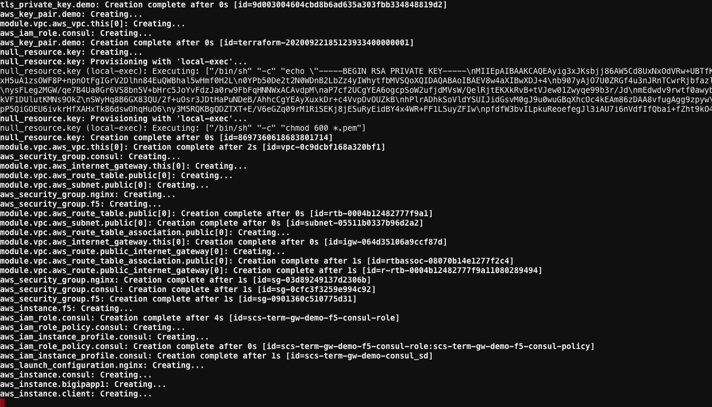
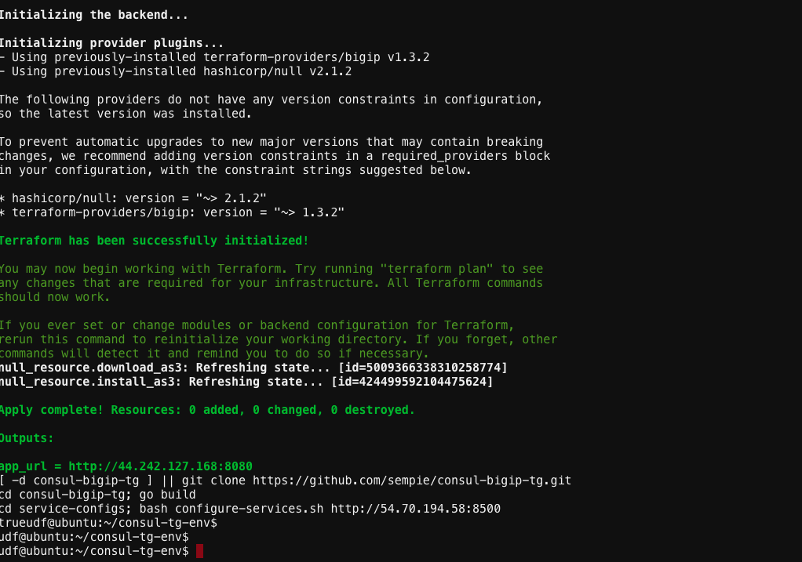

Lesson3 –> Run Make File to create Infrastructure¶
Got to ubuntu Web Shell and change directory to
`consul-tg-env`Run
`make all`This will run terraform and build the infra

After about 4 minutes you should have all the instances created on AWS
Note
If you are new to the F5 BIG-IP platform, we have created an overview in the BIG-IP Basics section.